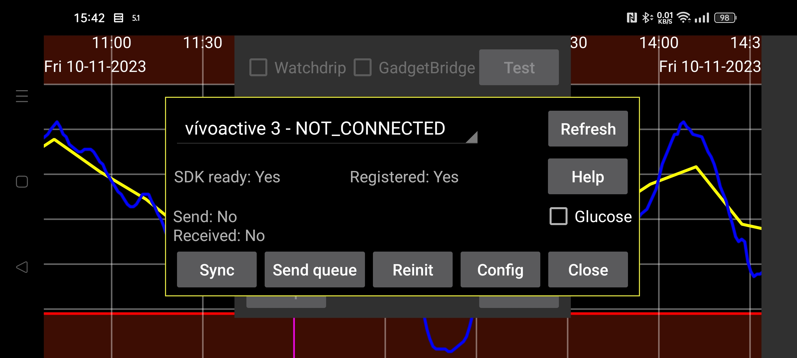

ar be de es fr hi it ja nl pl pt ru tr uk uz zh en
Kerfstok (https://apps.garmin.com/en-US/apps/b6348ccc-86d8-4780-8013-d9e19fed5260 (see also https://www.juggluco.nl/Kerfstok/index.html) is a watch app for Garmin sport watches that allow third party apps. Since 1.6.0 also for watches without touchscreen. Kerfstok has the following uses:
Enter numbers and exchange them with Juggluco;
Displays the stream glucose value received from Juggluco;
Displays this glucose value during sport, while also showing speed and distance. The activity will be recorded and can be displayed in Garmin's connect app.
This watch app can connect via Bluetooth with Juggluco to exchange amounts and continually display your current glucose value.
TROUBLESHOOTING:
First, your watch name should be shown "CONNECTED". If not, solve the problem in Garmin's Connect app. Second, Kerfstok should be started on your watch.
Sometimes the connection between watch and phone is disrupted.
If Send status is FAILURE_DURING_TRANSFER, you can do one or all of the following:
- Switch Bluetooth off and on, and thereafter press Reinit;
- Reboot the watch (nearly always successful, but sometimes it has to be done multiple times);
- Reboot the phone (last option).
For other problems force stopping the Garmin connect app, starting it again and pressing reinit can be of use.
If there is a proper connection and for some reason the amounts on watch and phone are out of sync, you can press Sync, to make them send the numbers they haven't sent yet, to each other.
Sometimes a button named "Send Queue" is shown; this means that there are messages that are not yet sent to the watch. Normally they will be sent automatically in due time, but sometimes this was interrupted and pressing on Send queue will continue the sending. But if it was not sent because of a broken connecting this has very little benefit. Pressing Send Queue during an ongoing transaction can break the connection.
Sometimes when “Send Queue” is shown, there is a connection problem that makes that messages are only send from phone to watch but not in the other direction. This is the case when the time after “Receive” is older than the time after “Send”. To repair this, you have again do one or all of the following one or multiple times:
Press Reinit;
Force stop, the Garmin Connect app and start it again followed by pressing Reinit;
Switch Bluetooth off and on;
Reboot the watch;
Reboot the phone.
I had a view times that connection problems remained even after taking the above steps, and the problem was solved by reinstalling Garmin Connect or, in app info of Garmin Connect, clearing Storage and opening it again. Because Garmin Connect stores data on an internet server, you can reinstall it without losing data. After clearing data I didn’t even need to log in again, I only needed to give a lot of permissions.
Refresh rewrites this dialog with new information (e.g. after Reinit or Sync).
Checking "Glucose" determines if glucose values are sent to the watch.
Config: set Dark mode, Shortcuts and ID.
WARNING: Juggluco can only be used with one Kerfstok. You can’t connect Juggluco to Kerfstok on multiple watches or on a watch and a bike computer.